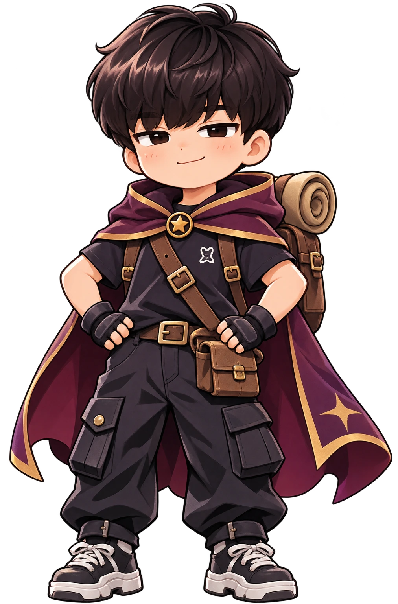
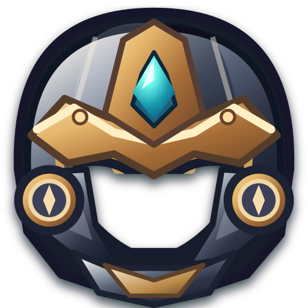

우이지의 기본 탐험가 헬멧을 먼저 시험해. 같은 규격의 착용 위치와 애니메이션을 나중에 다른 헬멧 디자인에도 적용할 수 있어.
이 화면은 장비 품질 실험용이야. 기존 게임의 레벨·코인·착용 기록·구매 아이템은 변경하지 않아.
캐릭터 화면 · 밀착 착용


현재 모델탐험가 헬멧 · 기본형
원본 캐릭터 얼굴과 복장 이미지는 그대로 사용투명 얼굴창 / 밀착 측면 보호구 / 턱 보호 장치
실제 36프레임 낙하 원본 + 공통 헬멧
현재 모션일반 낙하
이미지 로딩 중…
머리 위치 맞춤 · 기준 앵커 조정
모션마다 헬멧이 머리에서 벗어나지 않는지 시험하기 위한 조절 장치야. 이 값은 이 시험 화면에만 적용돼.
공통 규격의 핵심 ① 헬멧 바깥 윤곽·얼굴창 기준 크기를 동일하게 제작
② 낙하·가속·최고속·벽점프에서 캐릭터와 같은 회전·기울기·크기 적용
③ 새 헬멧은 같은 100×100 그림 틀의 디자인 파일만 교체
④ 원본 헤어스타일이 얼굴창으로 비치는지 실제 갤럭시에서 확인해 마지막으로 마스킹 보정
기본 헬멧 원화 · 게임용 규격
100 × 100 표준 슬롯 · SVG 원본 작은 상점 아이콘, 캐릭터 착용 모습, 게임 속 모션에 동일한 원본을 사용하는 구조야. 개구리·다크·화염 헬멧은 이 실험이 통과한 뒤 같은 착용 기준을 쓰도록 제작.